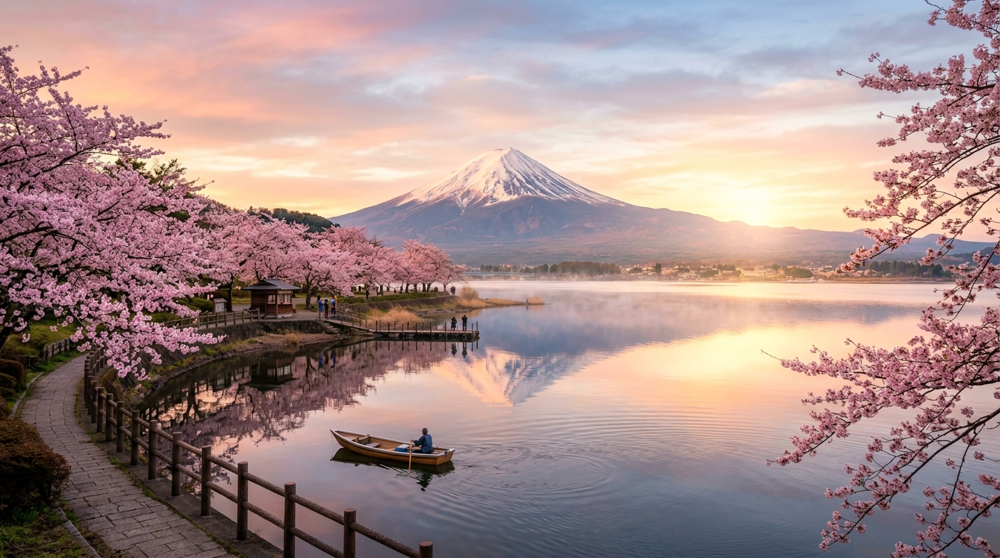
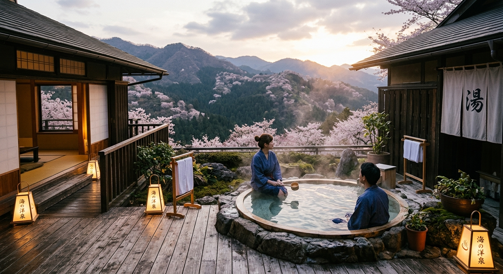
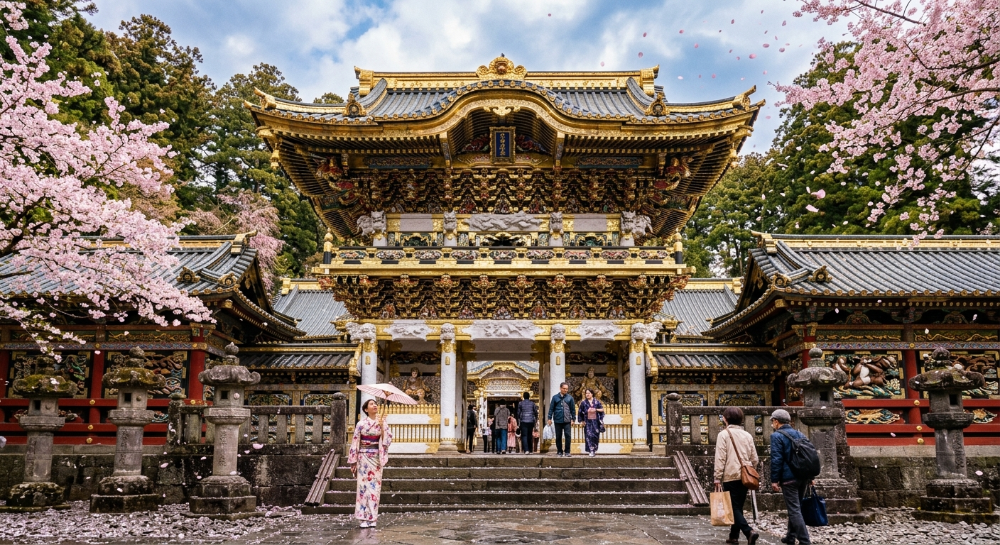
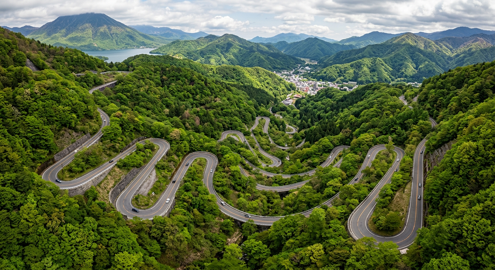
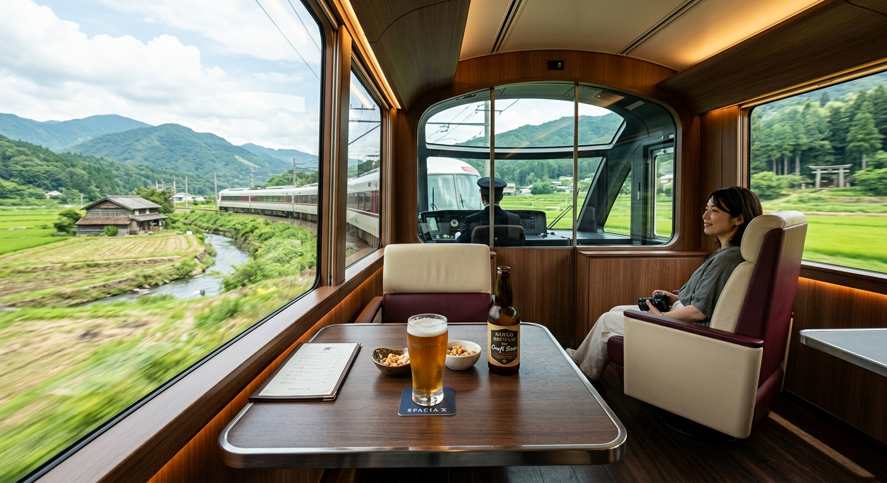
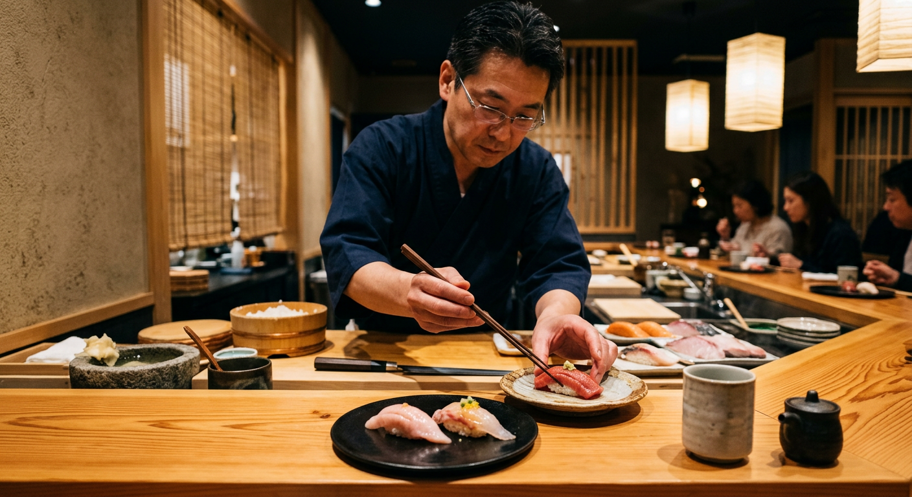

Start in the electric energy of Shibuya. Drive through Japan's wine country to a ryokan where every room faces Mount Fuji. Navigate 48 hairpin turns up a mountain. Float through ancient shrines. Ride home on a luxury train with a cocktail in hand.
Late April means Tokyo's cherry blossoms are done — but at higher elevations, they're at peak bloom. We're chasing the blossoms to where they're actually happening: Lake Kawaguchiko and the mountain roads of Nikko.
ZIPAIR ZG24 lands at Narita at 8 PM. Narita Express to Shibuya (90 min). Check into the hotel, walk the neon streets, grab late-night ramen at the hotel or wander to a nearby shop. Jet lag is real — don't fight it, lean in.
Morning walk through Meiji Shrine — a forest in the middle of the city, peaceful before the crowds. Stroll Harajuku and Omotesando for coffee and people-watching.
Afternoon: teamLab Borderless at Azabudai Hills. An immersive digital art museum where rooms of light, water, and flowers flow around you. Plan 2–3 hours. Evening: dinner in Shibuya.
Morning at Tsukiji Outer Market — tamagoyaki, fresh uni, tuna skewers from the stalls. Then to Asakusa for Senso-ji, Tokyo's oldest temple, with its enormous red lantern and Nakamise shopping street.
Evening: omakase sushi. Sushi Hajime in Shibuya does a 10-piece weekend lunch for ¥12,550 (~$85) — seasonal nigiri from a hagama rice pot. Or Sushi Yuu for a special 18-course dinner (~$150).
Pick up a rental car and drive west on the Chuo Expressway. The landscape transforms from city to mountains in under an hour.
Detour: Ide Sake Brewery. Right in Kawaguchiko — a token-operated tasting machine with 12 different sake. Get 5 tokens per flight, taste your way through, and bring bottles home. The staff speaks English and walks you through everything.
Arrive at Kozantei Ubuya — a ryokan where every single room faces Mount Fuji across the lake. Private onsen on the balcony. Full kaiseki dinner included. Wake up to Fuji turning pink at sunrise.


Sunrise at the lake. On a still morning, Fuji reflects perfectly in the water. Then drive to Arakurayama Sengen Park — 398 steps up to the Chureito Pagoda. This is THE iconic shot: red pagoda + cherry blossoms + Mount Fuji.
Then drive northeast to Nikko (~3 hours via expressway). Check in, explore the town, and soak in an onsen after the drive.

Morning: drive the Irohazaka — 48 hairpin turns climbing into the highlands. Stop at Akechidaira lookout for views over the valley. The road is famously split: 20 turns going up, 28 coming down, all one-way. No oncoming traffic on the turns.
At the top: Lake Chuzenji and Kegon Falls — a 97-meter waterfall plunging into a gorge. Then back down to visit Toshogu Shrine — the most ornately carved shrine in Japan. UNESCO World Heritage. 500+ carvings including the famous three wise monkeys.
Return the rental car. Then board the Spacia X — Tobu Railway's luxury limited express — back to Asakusa. Book the Cockpit Lounge: panoramic front windows, craft beer, and the countryside rolling past. The perfect ending to the road trip.

Sleep in. Wander Shibuya for last-minute shopping — Tokyu Hands, Don Quijote, or the depachika (basement food hall) for omiyage gifts. Maybe a final bowl of ramen.
Narita Express to the airport. ZIPAIR ZG25 departs NRT 9:30 PM, arrives SFO 2:45 PM same day.
A short list of the best bites, from Michelin-level omakase to the konbini at 2 AM.

10 seasonal nigiri from a hagama rice pot. Chef Hiroshi Takahoshi's weekend lunch is the sweet spot. Book on Tabelog or Tablecheck.
18-course omakase with big portions. Chef Daisuke is entertaining. "Go hungry" — multiple Redditors' top rec. sushiyuu.com
Legendary dipping ramen. Rich pork broth, thick noodles. Always a line, but it moves fast. Open late — perfect for jet lag nights.
"Memory Lane" — tiny counter-seat yakitori joints, charcoal smoke, cold beer. Go at dusk for the atmosphere. Old Tokyo at its best.
Raw whitebait on rice — only available in spring. April is peak season. Café Yoridokoro by the Enoden tracks is the spot.
AI-powered blind tasting: try 10 different sake, the system matches your palate. ¥2,750 (~$18). Also has all-you-can-drink courses and sake cocktails. English menu.
Elegant junmai-only standing bar. Friendly staff suggests brands and temperatures. All-you-can-drink ¥2,000/hour (~$13). Also in Shinjuku and Shimbashi.
Token-operated tasting machine — 12 sake, 5 tokens per flight. English-speaking staff walks you through it. Bring bottles home.
Standing bar inside the station. 40+ sake, doburoku (cloudy unfiltered) brewed on premises. English-speaking concierge. Perfect pre-Shinkansen stop.